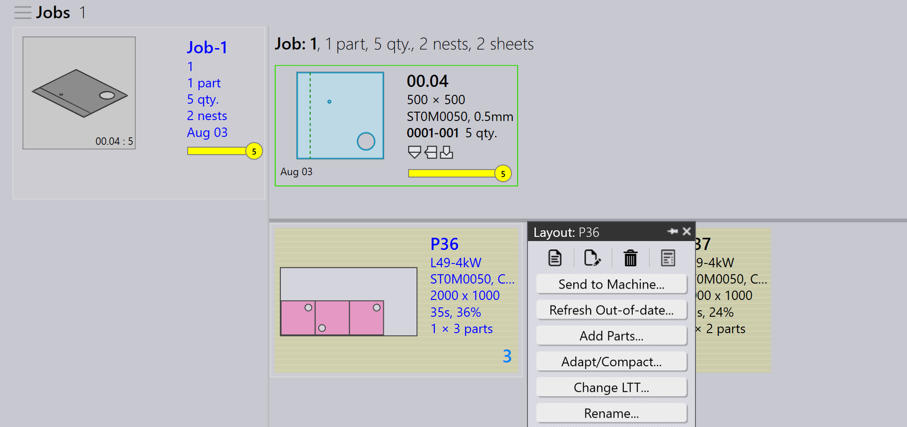

Elavult
Amikor egy már táblásításra küldött alkatrészt szerkeszt vagy módosít, az elvégzett változásoknak a táblatervekben is frissülniük kell. Ezt nevezzük az elavult elrendezések frissítésének — ez biztosítja, hogy a feladat mindig az alkatrész legfrissebb verzióját használja.
-
Ennek engedélyezéséhez lépjen a factory → Job → Nest settings menübe, és jelölje be a Auto-refresh Out-of-date layouts jelölőnégyzetet.

-
Ha az Elavult elrendezések automatikus frissítése be van kapcsolva, minden olyan elrendezés, amely Folyamatban vagy Jóváhagyási állapotban van, automatikusan frissül a módosított alkatrésszel — nincs szükség kézi beavatkozásra.
-
Ha az Auto-refresh Out-of-date layouts jelölőnégyzet nincs bejelölve, a táblaterveket kézzel kell frissítenie.
-
Lépjen a Job → táblatervek oldalra, és válassza a Yes lehetőséget az Out-of-date szűrőben, hogy megtalálja a régi verziót használó összes táblatervet.
-
Az elavult táblatervek sárgával vannak kiemelve.
-
Kattintson a jobb egérgombbal a kiemelt táblatervre, és kattintson a Refresh Out-of-date elemre.

-
A táblatervek frissülnek a módosított alkatrésszel, és a változások érvényesülnek a feladatban.